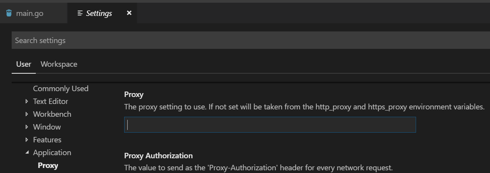

go get代理设置
go大部分站点在国内被墙，想要直接使用go get命令下载包，就必须使用代理，本文使用的是shadowsocks代理访问外部网。
设置步骤
1.使用shadowsocks
在windows下配置好shadowsocks并运行
2.配置环境变量http_proxy
因为go get命令首先要从后面的url路径上取得meta tags如下：
Fetching https://google.golang.org/grpc?go-get=1
Parsing meta tags from https://google.golang.org/grpc?go-get=1 (status code 200)
go命令本身走代理是依靠环境变量来设置的，因此：
# cmd 下设置临时环境变量
set http_proxy=http://127.0.0.1:1080
#linux下为
export http_proxy=http://127.0.0.1:1080
其中：127.0.0.1:1080为shadowsocks代理的本地路径
还可以设置go命令的别名，这样每次打开cmd都不需要设置临时的环境变量
参考：cmd命令别名
3.设置代理
(1) 配置vscode代理
找到setting->user->application->proxy 如图：

(2) 配置git代理
因为go最终使用的是源码管理工具下载包文件，本文使用的源码管理工具是git
#配置git proxy
git config --global http.proxy=http://127.0.0.1:1080
换行符自动转换的坑
git在安装的时候会默认勾选换行符转换的checkbox，然后每次提交文件的时候，就会自动将CRLF替换成LF
如下禁用此设置不需要重新安装：
git config --system core.autocrlf=false
#显示所有配置文件的路径
git config --list --show-origin
配置文件路径在C:\ProgramData\Git\config
参考: 自动换行
然后go get命令可以直接下载墙外的包了
#下载gRPC包
go get -v -u google.golang.org/grpc
go1.11之后的代理
go开始使用module包管理工具(版本>go1.11)后;go get下载可以使用镜像代理，链接如下:
goproxy.io
我们必须在windows下设置环境变量GOPROXY：
GO111MODULE="on"
GOPROXY="https://goproxy.io"
这样vscode里面才能使用go module模式通过代理来下载go包： 在help/Toggle Developer Tools里面我们可以看到环境变量有值了。
process.env.GOPROXY